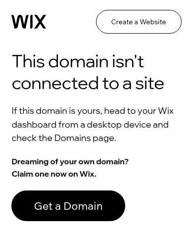

Their domain isn’t connected.

bowlingcleaningva.com today. Wix domain error.

Rebuilt for the phone. This is the real new site. Scroll and tap inside the phone.
- Wix error: “This domain isn’t connected to a site.”
- Customers hitting the web address get a builder 404 — no cleaning info.
- Put back: a real cleaning homepage, their (540) number (display only in this demo), a home/office quote estimator, a callback form.
- This is a Mobile Rescue, $700 flat.